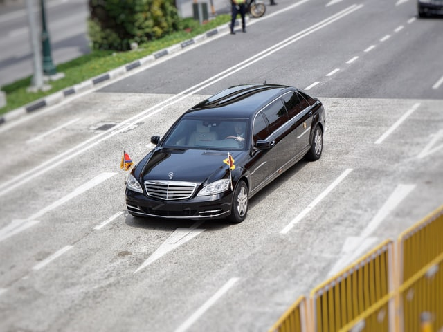

제20대 대통령 선거를 6일 앞둔 3일 공개된 여론조사 결과 더불어민주당 이재명, 국민의힘 윤석열 대선 후보 지지율은 40% 동률을 기록했다. 이 조사는 윤석열·안철수 후보 단일화 발표 이전에 진행된 것으로, 단일화 여론은 반영되지 않았다.
출생지는 경상북도 안동군이다. 안동에서 초등학교를 졸업하고 경기도 성남시로 이주하여 소년공 생활을 하였다. 검정고시를 통해 중졸·고졸 학력을 취득한 뒤 중앙대학교 법과대학에 진학하였고, 대학을 졸업하고 사법시험에 합격하여 법조계의 길로 들어섰다.
이후 경기도 성남시 일대에서 인권변호사 겸 시민사회운동가로 활동하였다.  2010년 지방선거에서 성남시장에 처음 당선되었고, 2014년 지방선거에서 성남시장 재선에 성공하였다. 2017년 더불어민주당 제19대 대통령 후보 경선에 참여하였으나 3위로 낙선하였다. 이후 2018년 지방선거에서 경기도지사에 당선되었다.[28]
2021년 7월 1일 제20대 대통령 선거 출마를 공식 선언하였고, 더불어민주당 제20대 대통령 후보 경선에 참여하여 2021년 10월 10일 더불어민주당 대통령 후보로 선출되었다.